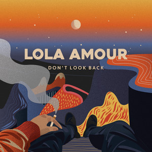

My Top 10 Favorite Songs
Top 1
Ben&Ben
Ben&Ben
This song took inspiration from a youtube comment in their Pagtingin music video. One of the bands vocalist decided to write a song about it.
Top 2
Phum Viphurit
Phum Viphurit
A song about people who frequently battle against anxiety and stress.
Top 3
Hey Barbara
IV of Spades
Hey Barbara
IV of Spades
A 70s disco and funk vibe. This was one of the first songs I played when I had a band.
Top 4
Rex Orange County
Rex Orange County
A song about someone entering your life and how love changed you. I love the indie vibes of this song.
Top 5
Rico Blanco
Rico Blanco
A song about a person expressing how lucky he is with his partner, how lucky and thankful he is to be a part of that partner’s universe.
Top 6 Maybe Maybe
Lola Amour
Lola Amour
A song about surpressing your feelings instead of confessing. This song has a slow and timid mood which I like.
Top 7
IV of Spades
IV of Spades
This song has a very deep story. About how our life moves in different ways and that as a child we were trapped because we are not as free as we grow older.
Top 8
Say You Won't Let Go
James Arthur
Say You Won't Let Go
James Arthur
This song was the first song I played on guitar that is why I added it to my list. It is about telling someone to not leave us.
Top 9
Cueshe
Cueshe
I love OPM and this is one of my favorite classics. It is about asking someone for forgiveness.
Top 10
Boy Pablo
Boy Pablo
Another indie song that has a really good tune. This song is about regret regarding letting go of someone you love.